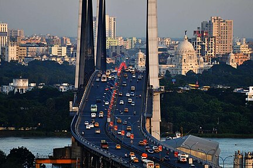

Kolkata
Kōlkātā
Calcutta


From Wikipedia, the free encyclopedia
Kolkata (UK: /kɒlˈkɑːtə/[13] or /kɒlˈkʌtə/,[14] US: /koʊlˈkɑːtɑː/,[15] Bengali: [kolˈkata] ⓘ, IAST: Kōlkātā; also known as Calcutta /kælˈkʌtə/[14][15] which was the official name until 2001) is the capital and largest city of the Indian state of West Bengal. It lies on the eastern bank of the Hooghly River, 80 km (50 mi) west of the border with Bangladesh. It is the primary financial and commercial center of eastern and northeastern India.[16] Kolkata is the seventh most populous city of India with an estimated city proper population of 4.5 million (0.45 crore).[17] It is the centre of the Kolkata Metropolitan Region, one of the most populous metropolitan areas in the world with a population of over 15 million (1.5 crore) residents. Kolkata is the de facto cultural capital of India and historically and culturally significant city in the historic region of Bengal.[1][18][19] It is the second largest Bengali-speaking city in the world. It has the highest number of Nobel laureates among all cities in India.
The three villages that predated Calcutta were ruled by the Nawab of Bengal under Mughal suzerainty. After the Nawab granted the East India Company a trading licence in 1690,[20] the area was developed by the Company into Fort William. Nawab Siraj ud-Daulah occupied the fort in 1756 but was defeated at the Battle of Plassey in 1757, after his general Mir Jafar mutinied in support of the Company, and was later made the Nawab for a brief time.[21] Under company and later crown rule, Calcutta served as the de facto capital of India until 1911. Calcutta was the second largest city in the British Empire, after London,[22] and was the center of bureaucracy, politics, law, education, science and the arts in India. The city was associated with many of the figures and movements of the Bengali Renaissance. It was the hotbed of the Indian nationalist movement.[23] The University of Calcutta and its affiliated colleges produced many leading figures of South Asia.
Kolkata's architecture includes many imperial landmarks, including the Victoria Memorial, Howrah Bridge and the Grand Hotel. The city's heritage includes India's only Chinatown and remnants of Jewish, Armenian, Greek and Anglo-Indian communities. The city is closely linked with Bhadralok culture and the Zamindars of Bengal, including Bengali Hindu, Bengali Muslim and tribal aristocrats. The partition of Bengal affected the fortunes of the city. In the late 20th century, the city hosted the government-in-exile of Bangladesh during the Bangladesh Liberation War in 1971;[24] it built India's first subway; and it was overtaken by Mumbai (formerly Bombay) as India's largest city. The Port of Kolkata is India's oldest operating port. The city is often regarded as India's cultural capital.
Following independence in 1947, Kolkata, which was once the premier centre of Indian commerce, culture, and politics, suffered many decades of political violence and economic stagnation before it rebounded.[25] The city was also flooded with Hindu refugees from East Bengal (present-day Bangladesh) in the decades following the 1947 partition of India, transforming its landscape and shaping its politics.[26][27] A demographically diverse city, the culture of Kolkata features idiosyncrasies that include distinctively close-knit neighbourhoods (paras) and freestyle conversations (adda). Kolkata is home to venerable institutions of national importance, including the Academy of Fine Arts, the Asiatic Society, the Indian Museum and the National Library of India. It is the center of the Indian Bengali film industry, which is known as Tollywood. Among scientific institutions, Kolkata hosts the Geological Survey of India, the Botanical Survey of India, the Calcutta Mathematical Society, the Indian Science Congress Association, the Zoological Survey of India, the Horticultural Society, the Institution of Engineers, the Anthropological Survey of India and the Indian Public Health Association. Four Nobel laureates and two Nobel Memorial Prize winners are associated with the city.[28] Though home to major cricketing venues and franchises, Kolkata stands out in India for being the country's centre of association football. Kolkata is known for its grand celebrations of the Hindu festival of Durga Puja, which is recognized by UNESCO for its importance to world heritage.[29] Hence, Kolkata is also known as the 'City of Joy'.[30]
The word Kolkata (Bengali: কলকাতা [kolˈkata]) derives from Kôlikata (Bengali: কলিকাতা [ˈkɔliˌkata]), the Bengali language name of one of three villages that predated the arrival of the British; the other two villages were Sutanuti and Govindapur.[31]
There are several explanations for the etymology of this name:
Although the city's name has always been pronounced Kolkata or Kôlikata in Bengali, the anglicised form Calcutta was the official name until 2001, when it was changed to Kolkata in order to match Bengali pronunciation.[35]
| Climate data for Kolkata (Alipore) 1981–2020 normals, extremes 1901–present | |||||||||||||
|---|---|---|---|---|---|---|---|---|---|---|---|---|---|
| Month | Jan | Feb | Mar | Apr | May | Jun | Jul | Aug | Sep | Oct | Nov | Dec | Year |
| Record high °C (°F) 32.8 | (91.0) 38.4 | (101.1) 41.1 | (106.0) 43.3 | (109.9) 43.7 | (110.7) 43.9 | (111.0) 39.9 | (103.8) 38.4 | (101.1) 38.9 | (102.0) 39.0 | (102.2) 34.9 | (94.8) 32.5 | (90.5) 43.9 | (111.0) |